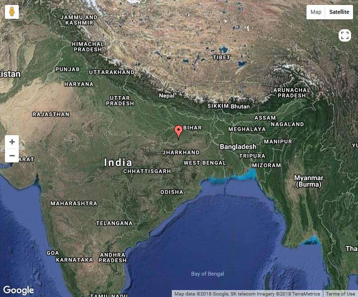

Welcome to the land of Land of Enlightenment and Salvation - GAYA
Bodh Gaya, around 10 kilometres from Gaya district headquarters is the place where Prince Gautam became Lord Buddha and got enlightenment under a peepal tree
More Information
